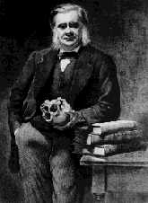

Monday, August the 6th, 2007
back to: title, date or indexes
Richard Carter of Gruts has kindly drawn my attention to this splendid passage from an autobiographical sketch by Thomas Henry Huxley:

I was born about eight o'clock in the morning on the 4th of May, 1825, at Ealing, which was, at that time, as quiet a little country village as could be found within half a dozen miles of Hyde Park Corner. Now it is a suburb of London with, I believe, 30,000 inhabitants. My father was one of the masters in a large semi-public school which at one time had a high reputation. I am not aware that any portents preceded my arrival in this world; but, in my childhood, I remember hearing a traditional account of the manner in which I lost the chance of an endowment of great practical value. The windows of my mother's room were open, in consequence of the unusual warmth of the weather. For the same reason, probably, a neighbouring bee-hive had swarmed, and the new colony, pitching on the window-sill, was making its way into the room when the horrified nurse shut down the sash. If that well-meaning woman had only abstained from her ill-timed interference, the swarm might have settled on my lips, and I should have been endowed with that mellifluous eloquence which, in this country, leads far more surely than worth, capacity, or honest work, to the highest places in Church and State. But the opportunity was lost, and I have been obliged to content myself through life with saying what I mean in the plainest of plain language; than which, I suppose, there is no habit more ruinous to a man's prospects of advancement.